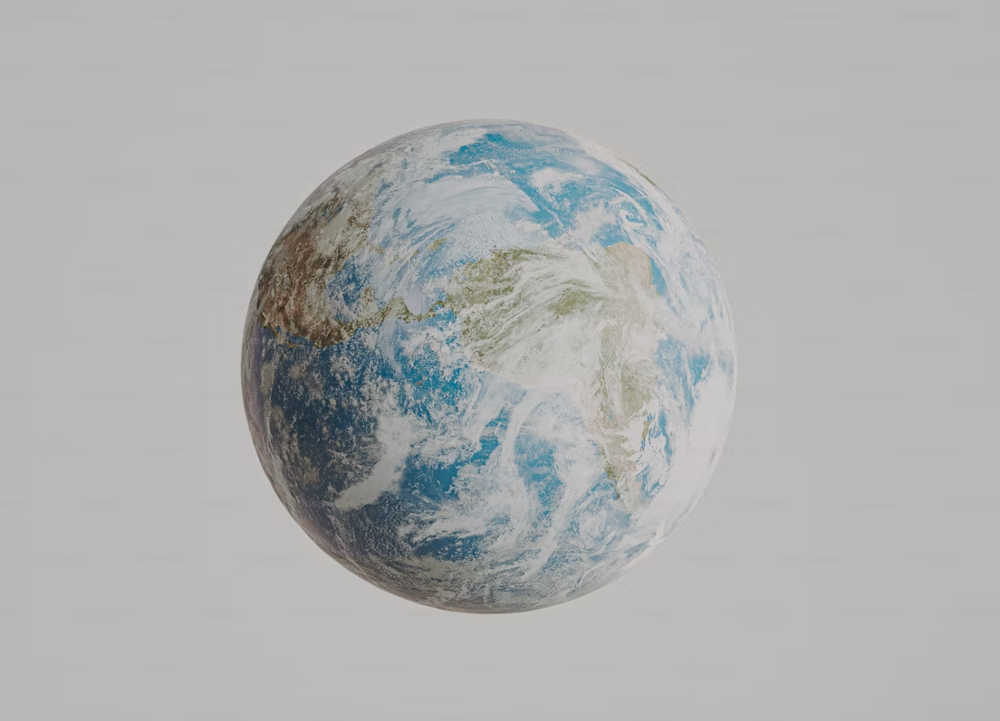
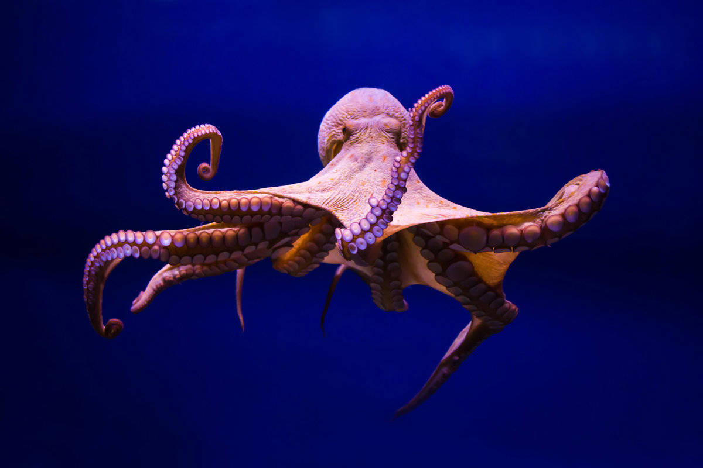

Descubra curiosidades fascinantes sobre o mundo ao nosso redor!
Você sabia?
O polvo tem três corações e o sangue azul!
Fato curioso
A Lua se afasta da Terra cerca de 3,8 cm por ano.
Inacreditável!
Existem mais estrelas no universo do que grãos de areia em todas as praias da Terra.
Veja também:
Assista a um vídeo cheio de curiosidades interessantes!
Veja as Fotos:
|  |  |  |
|---|